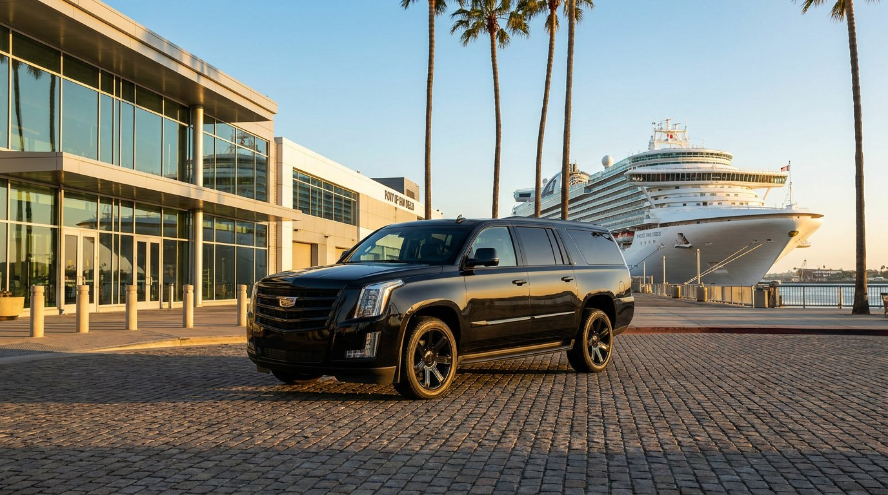

San Diego is one of the busiest homeports on the West Coast, and the fall-through-spring cruise season is ramping back up right now — ships sailing out of the B Street Cruise Ship Terminal and Broadway Pier on the downtown waterfront, most headed for the Mexican Riviera or repositioning through the Panama Canal. If you're flying in for a cruise, or driving up from out of town, getting from SAN or your hotel to the pier is a smaller decision than picking your cabin — but it's the one that determines whether embarkation day starts calm or starts stressed.
Both cruise terminals sit right on North Harbor Drive, a few minutes from the Gaslamp Quarter — inside the same downtown zone we already publish a flat rate for. That means a transfer from SAN to your ship is $60, flat, the same rate as any other SAN-to-Downtown trip:
You book the ride once, weeks before your trip, and the price doesn't move — not because your flight got in late, not because three other ships are in port the same morning, not because it's a Saturday.
If you're driving to San Diego and leaving your car for the length of the cruise, it's worth doing the arithmetic before you commit to a lot. The Port of San Diego doesn't operate its own long-term cruise parking directly at the pier, so passengers use nearby lots — rates generally run somewhere in the $15–$40 per day range depending on the operator and how close you park to the terminal. For a 7-night cruise, that's realistically $100–$280 before you've left the dock, plus the drive back into port traffic when you return, tired, with luggage, looking for your car in a lot you half-remember.
A round-trip transfer often lands at or below that parking bill — and you skip the lot altogether. If you're coming from within San Diego County, an hourly charter at $90/hr covers a door-to-pier drop-off and, if you book the return too, a pickup on disembarkation day.
Our Sprinter party bus is genuinely great for a bachelorette weekend or a group headed to a concert — LED lighting, a bar with ice, room to stand and move around. It is not built for eight suitcases and four carry-ons. Cruise luggage is heavy, boxy, and there's a lot of it per person. For pier transfers, we run the Cadillac Escalade or Chevy Suburban — real cargo space, a smooth loading height, and room for the whole party plus bags without anyone holding a duffel bag on their lap.
If you've cruised before, you know the drill — the ship says you'll be off by 9 AM, and then customs, a slow gangway, or a documentation hold pushes it to 10:15. Rideshare drivers circling the pier on a five-minute cancellation window don't handle that well. Our 60-minute free wait applies on the return trip too, and because we're tracking your booking (not an app ping), a later-than-planned disembarkation doesn't turn into a scramble for a ride while you're standing curbside with luggage.
Cruises are often family trips — different flights, different hotels the night before, one shared goal of getting everyone to the terminal by boarding time. For groups like this, an hourly charter is usually the better call than separate SAN transfers: one vehicle picks up from two or three hotels around downtown or Mission Valley, then delivers everyone to the pier together. It's easier to coordinate, and it means the trip starts as a group instead of four separate check-ins.
If you're already staying a few blocks from the pier and traveling light, walking or a short rideshare hop is genuinely the simplest option — we won't pretend otherwise. Where a booked car service earns its cost is exactly where cruise days tend to go sideways: heavy luggage, a group split across flights, an uncertain disembarkation window, or a parking bill that adds up faster than expected.
Cruise lines typically ask passengers to arrive at the terminal within a fairly tight boarding window, often a few hours before the published sail time. Working backward from that window — not from your flight's scheduled landing time — is what actually protects your embarkation. We build in the buffer for baggage claim, terminal traffic on North Harbor Drive, and the security screening line, so you're not cutting it close on a day that can't be rescheduled if you miss the ship. Most cruisers book their transfer at the same time they finalize their flights, weeks ahead, but same-week bookings work too as long as a car is available.
Book your SAN-to-pier transfer, hourly charter, or return pickup online at pacificeliterides.com/booking or call (619) 394-5340. We confirm within 15 minutes and send your chauffeur's details before pickup — no prepayment required.